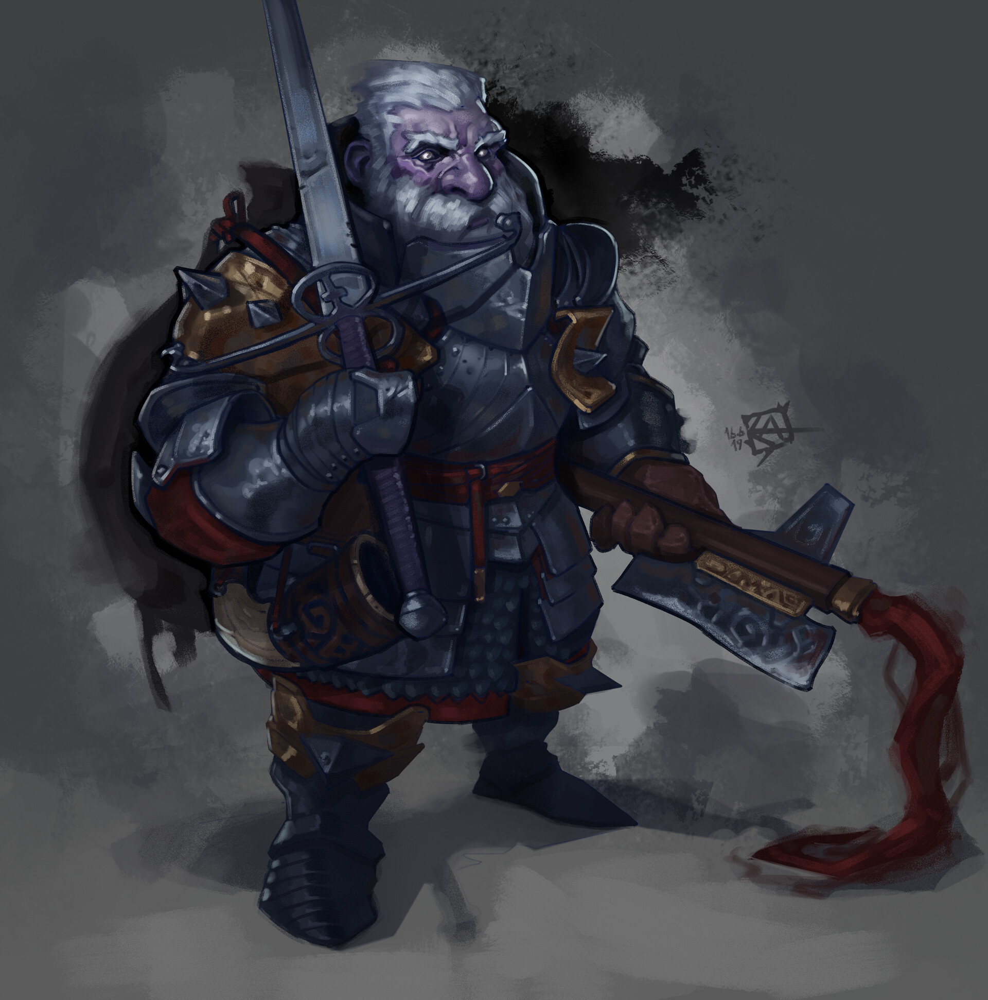
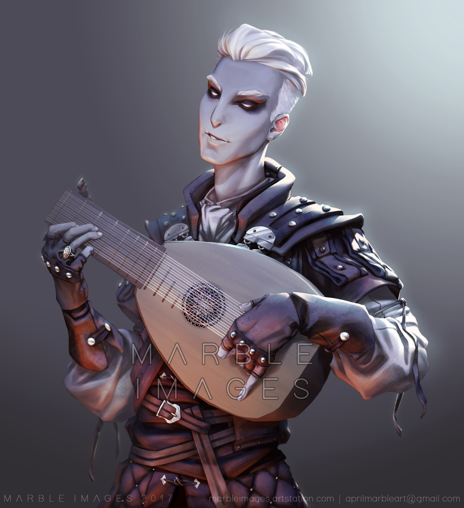
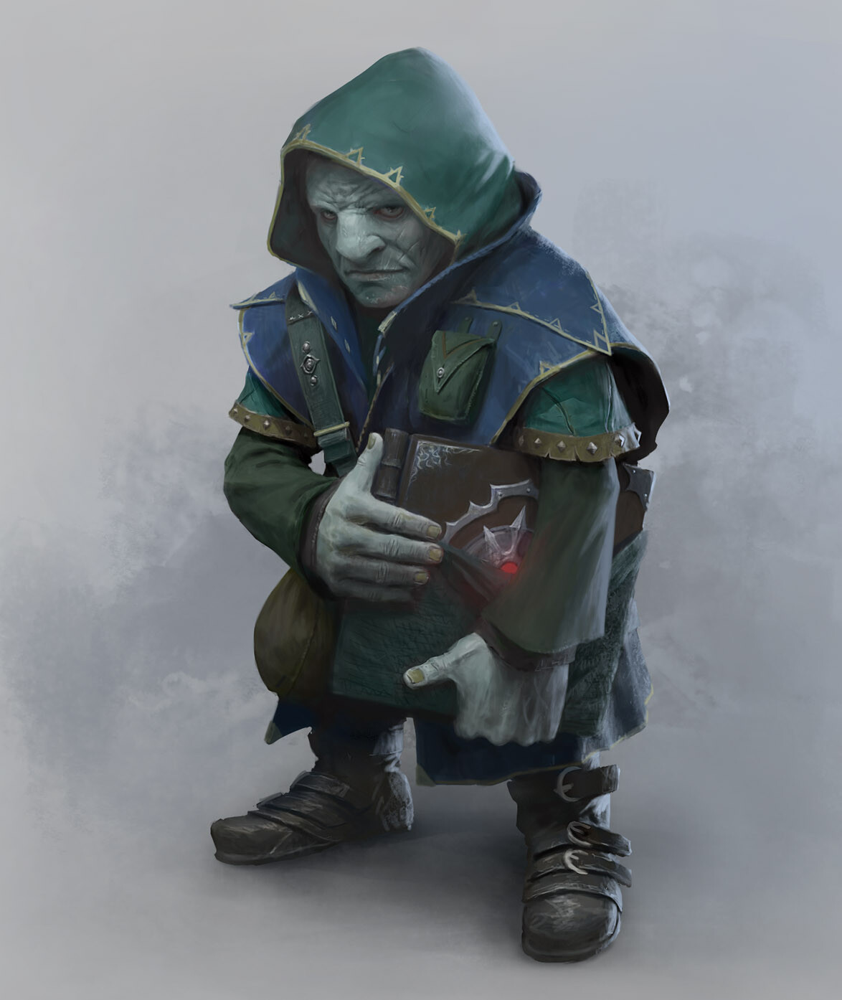

Il portale dedicato a Dungeons & Dragons 5e, con notizie, guide, build, tips sia per giocatori che per master e tantissimo contenuto per creare la vostra migliore campagna!
Calcola il tuo danno per turno!
Inserisci il tuo danno per turno, inizialmente tira i dadi, per esempio 4d6, 2d8 e poi inserisci il danno statico. Il risultato sarà la media effettiva del danno e il danno realizzato in quel turno tirando i dadi
Build Multiclassate



Ho sottratto principesse a re dormienti nei tumuli. Ho ridotto in cenere la città di Trebon. Ho passato la notte con Felurian e me ne sono andato sia con la vita, sia con la sanità mentale. Sono stato espulso dall’Accademia a un’età inferiore a quella in cui la maggior parte della gente viene ammessa. Ho percorso alla luce della luna sentieri di cui altri temono di parlare durante il giorno. Ho parlato a dèi, amato donne e scritto canzoni che fanno commuovere i menestrelli. Potresti aver sentito parlare di me.